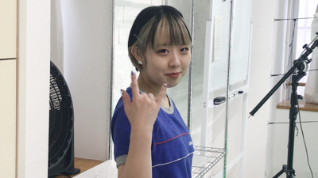
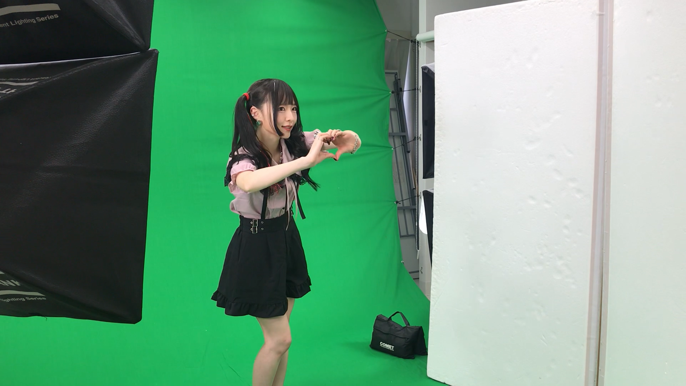
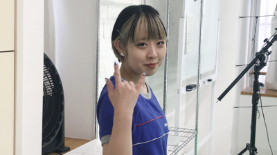
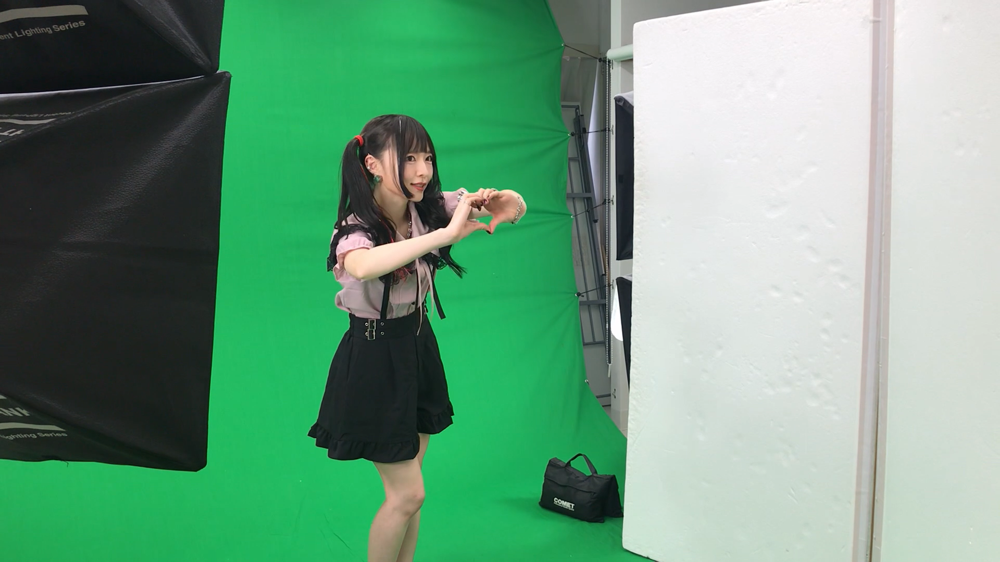

【MVメイキング映像】「安全開発ソング」回せ！グルーヴ開発部
2020.11 / Making Moive / Director & Editor
セルフプロデュースアイドル「回せ!グルーヴ開発部」の2ndSingle「開発者M」収録曲「安全開発ソング」のMV制作の様子を納めたメイキングムービー
新型コロナウイルスの感染の拡大はとどまるところを知らない。少しでも多くのコンテンツを公開することが多くの人々の楽しみにつながると信じて作成した。
Credits
- Producer : 回せ！グルーヴ開発部 Official HP
- Director, Editor : Tomoya Onuki
- Cast : Bon Kumono / Yuni Okota / Anzu Tamaki
 
